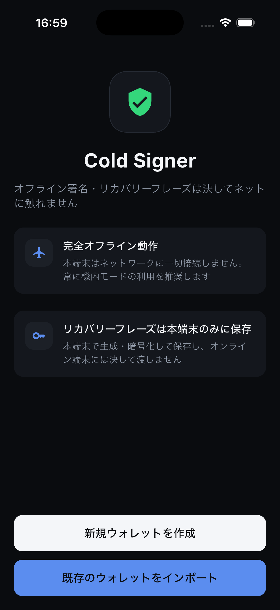
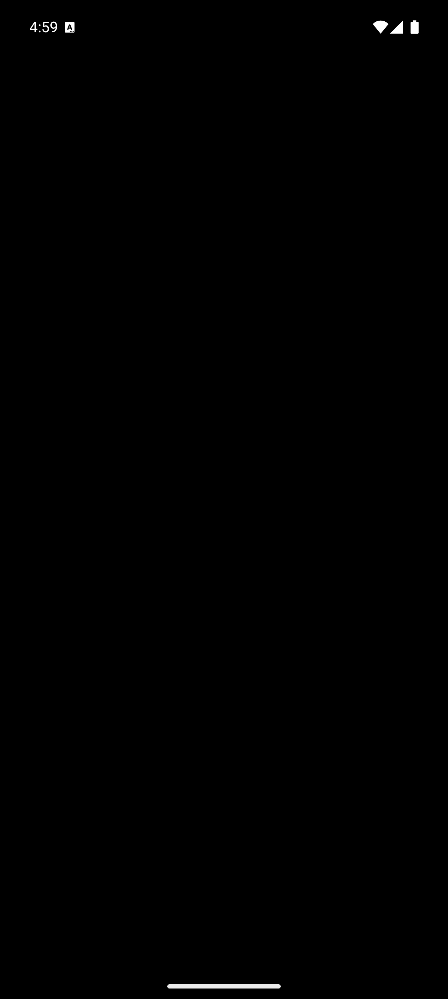

✓ 双平台构建、安装与启动通过
Cold Signer 包名测试
Android applicationId/namespace 与 iOS bundle identifier 已统一为 cc.siliconnexus.ktwallet.coldsigner。
测试结果
Flutter：104/104 通过
Android：Debug APK 构建成功；Android 15 模拟器安装并以前台 Activity cc.siliconnexus.ktwallet.coldsigner.MainActivity 启动。
iOS：Simulator 构建成功；Runner.app 的 CFBundleIdentifier 为 cc.siliconnexus.ktwallet.coldsigner，安装启动成功。
平台截图


Android 黑屏不是渲染失败。独立签名器的 MainActivity 无条件设置 FLAG_SECURE，系统截屏、录屏及最近任务预览都必须为空白；同时 dumpsys 已确认新包名 Activity 正在前台。